リアル ＝ 良いモーションとは限らない
現実の動きそのままだと、
かえって分かりにくい場合がある
+9の授業 ／ 座学 03
モーションデザイナーとして、
ものづくりをする立場ならそれだけでは不十分で、
必要なのは、動きに「命を吹き込む」こと。
「命を吹き込む」とは、
単なる演技ではなく、テーマを明確に伝え、
説得力のある動きを作ることを指す。
そのためには、
が重要になる。
ただし、
現実の動きをそのまま再現するだけでは良いモーションにはならない。
「見せるための工夫」が必要になる。
ポイント
リアル ＝ 良いモーションとは限らない
現実の動きそのままだと、
かえって分かりにくい場合がある
「見せるための嘘」が必要
誇張・予備動作・演出など、説得力のある嘘
「良く見えれば（格好良ければ）良い」と言われがち。
観る人の理解を優先
分かりやすさ ＞ 正確さ
相手に伝わるのかどうか？が鍵。
ディズニー作品をもとにまとめられたもので、
「キャラクターに命を吹き込む具体的な方法」を
示した原則のこと。
すでに触れている人も多く、
例えば「スクワッシュ＆ストレッチ」もその一つである。
この原則は現在でも非常に重要で、
手描きだけでなく3DCGでも広く活用されている。
モーションの質を高めるには、
この12原則を指針として調整することで、
より生き生きとした表現が可能になる。
特に、
「動きとしては正しいのに印象に残らない」という場合は、
これらの原則を意識してみると良い。
1スクワッシュ＆ストレッチ
（潰しと伸ばし）
変形によって「重さ・柔らかさ・勢い」を伝える
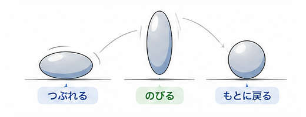
スクワッシュ（潰し）とストレッチ（伸ばし）によって、
動きに柔らかさ・重さ・勢いを与える原則。
物体が変形することで、
その質感やエネルギーを視覚的に分かりやすく伝えることができる。
例えば、ボールが地面に当たると潰れ、
跳ね返る際に伸びることで、
重さや反発力を表現できる。
また、キャラクター表現では、
腕や顔を伸縮させることで感情や動きを強調することも可能。
ただし、重要なのは体積を変えないこと。
潰したり伸ばしたりしても、
同じ物体として認識できるようにする必要がある。
2アンティシペーション
（予備動作）
「これから何が起きるか」を予測させるための動き
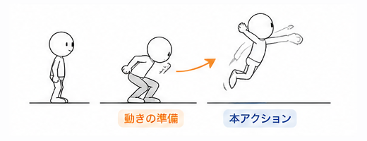
本動作の前に入れる「予備動作」によって、
動きの意図・方向・強さを分かりやすく伝える原則。
メインの動作とは逆方向の動きを加えることで、
次に何が起こるかを観る側に予測させることができる。
例えば、ジャンプの前にしゃがむ、
振り下ろす前に振り上げるなどが該当する。
予備動作が大きいほど、
その後の動きは強く・勢いのあるものとして感じられる。
また、予備動作がない場合、動きは突然に見え、
観る側にとって分かりにくく、不親切な表現となる。
そのため、
現実の動きよりもあえて強調して入れることが重要である。
3ステージング（演出）
「何を見せたいか」を整理して伝える設計
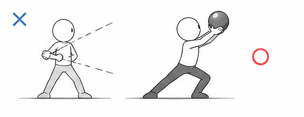
「何を見せたいか」を明確にし、
観る側に正しく伝えるための演出の原則。
画面内の情報を整理し、
視線誘導・構図・カメラワークなどを使って、
重要な要素がしっかり伝わるようにする。
具体的には、
といった工夫が含まれる。
また、場面の理解を助けるために、
一時停止や演出による強調も有効である。
ステージングが不十分だと、
何が重要なのか分からず、
印象に残らない画面になってしまう。
4ストレートアヘッド・
ポーズトゥポーズ
「どうやって動きを作るか」という制作手法の違い
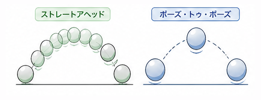
アニメーションの作り方（ワークフロー）に関する原則。
ストレートアヘッド
動きを最初から順番に
1フレームずつ作っていく方法。
流れに沿って制作するため、
自由で生き生きとした動きになりやすい。
ポーズトゥポーズ
動きの要となるキーポーズを先に決め、
間を補完する方法。
動きの設計がしやすく、
分かりやすくまとまった表現になる。
一般的に3DCGでは、
ポーズトゥポーズが主流とされている。
狙ったタイミングに重要な動きを配置できるため、
見せたいポイントを明確にしやすい。
5フォロースルー・
オーバーラップ
「遅れ」と「余韻」で自然さと重量感を出す
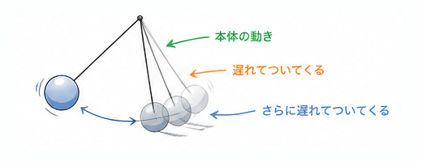
動きに遅れや余韻を加えることで、
自然さや柔らかさを表現する原則。
オーバーラップ
（遅れてついてくる動き）
体の一部が少し遅れて動くことで、
流れや柔らかさを表現する。
例：走り出した後に髪や服が遅れて動く
フォロースルー
（通り過ぎる動き）
動きが止まった後も、
一部が動き続けることで、
勢いや重量感を表現する。
例：急停止後に髪や服が行き過ぎて揺れる
パンチでの例
現実では、すべてのパーツが同時に動き出し、
同時に止まることはない。
そのため、この原則を入れることで、
CG特有の硬さや不自然さを解消できる。
また、
遅れの大きさによって
重さ・柔らかさ・勢いも表現できる。
6スローイン・スローアウト
加速と減速で自然な動きを作る
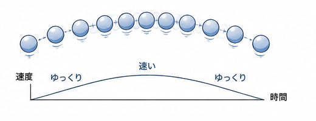
動きの始まりと終わりに緩急（加速・減速）をつけることで、
自然な動きを表現する原則。
物体は、
動き出すときはいきなり最大速度にはならず、
徐々に加速し、止まるときも徐々に減速する。
そのため、
「急に動く・急に止まる」動きは不自然に見える。
この原則では、
動きの前後に“間”を持たせることで、
滑らかでリアルな動きを作る。
3DCGでは、
キー間の補間カーブ（S字カーブ）によって表現されることが多い。
くわしくは座学 04接線の種類
7アーク（運動曲線）
動きを曲線で捉えて、自然さと美しさを出す
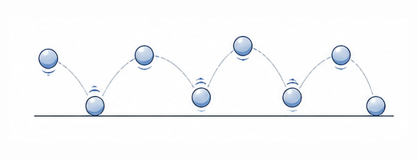
動きを直線ではなく曲線（アーク）で表現することで、
自然で滑らかな動きにする原則。
現実の多くの動きは、関節や重心の影響により、
直線ではなく円や弧を描くように動く。
例えば、
腕を振る動きは肩を中心とした円運動になり、
物を投げる動きも放物線を描く。
このようにアークを意識することで、
ロボットのような硬い動きではなく、
自然で美しい動きになる。
注意点
8セカンダリアクション
（副次アクション）
メイン動作を強化するための「補助の動き」
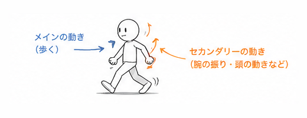
メインの動きに加えて行う補助的な動きによって、
状況や感情を分かりやすくする原則。
主となるアクションを引き立てるために、
同時に別の動きを加えることで、
表現に深みが生まれる。
例えば、ドアを叩く動作に対して、
もう一方の手を強く握ることで「怒り」の感情を強調できる。
セカンダリアクションがあることで、
キャラクターの状態や意図がより明確に伝わる。
押さえどころ
9タイミング
時間の使い方で動きの印象を決める

動きにかかる時間の長さや間隔によって、
速度や印象をコントロールする原則。
同じ動きでも、
かける時間によって速くも遅くも見え、
印象が大きく変わる。
例えば、短い時間で動けば素早く見え、
長い時間をかければゆっくりとした動きに見える。
また、動きの時間配分によって、
キャラクターの性格や感情を表現することもできる。
3DCGでは、
「1つの動作にどれだけ時間を割くか」が重要なポイントとなる。
タイミングが適切でないと、動きにメリハリがなく、
意図が伝わりにくくなる。
10イグザジャレイション（誇張）
伝わりやすくするために、あえて大げさにする
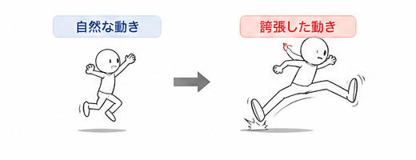
動きや表現をあえて大げさにすることで、
意図や印象を強く伝える原則。
現実の動きをそのまま再現するのではなく、
必要に応じて誇張することで、
分かりやすく印象に残る表現になる。
例えば、感情表現では、実際以上に大きく動いたり、
強く変形させることで、
キャラクターの状態を明確に伝えることができる。
誇張の度合いは作品のジャンルによって調整が必要で、
強すぎるとコメディ寄りの表現になる。
そのため、現実の正しさにとらわれすぎず、
伝えたい内容に応じてバランスよく使うことが重要である。
11ソリッドドローイング
立体感と奥行きを意識して、説得力のある画を作る
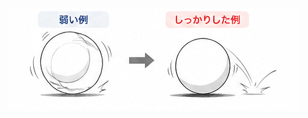
キャラクターや画面に立体感・奥行き・安定した形状を持たせるための原則。
物体の体積や遠近感を正しく捉えることで、
「作られた不自然さ」を防ぎ、
説得力のある見た目になる。
3DCGにおいては、モデルそのものだけでなく、
カメラアングルやレイアウトによって立体感を強調することが重要となる。
例えば、俯瞰やあおりの構図を使うことで、
奥行きや位置関係を分かりやすく表現できる。
この原則が不十分だと、
空間やキャラクターの関係性が伝わりにくくなる。
12アピール
魅力と個性を分かりやすく伝える
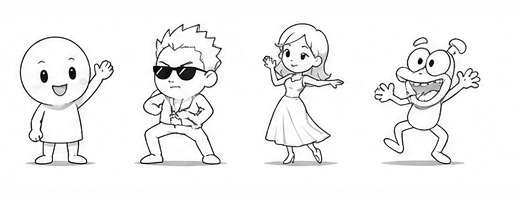
キャラクターや表現に魅力・個性・分かりやすさを持たせるための原則。
観る側に「どんなキャラクターか」が一目で伝わるように、
シルエットや特徴を強調し、
印象に残るデザインや動きにする。
例えば、
ヒーローらしさ・悪役らしさ・体型の特徴などを強調することで、
キャラクター性を明確に伝えることができる。
ただし、
情報を詰め込みすぎると伝わりにくくなるため、
要素の取捨選択と整理が重要となる。